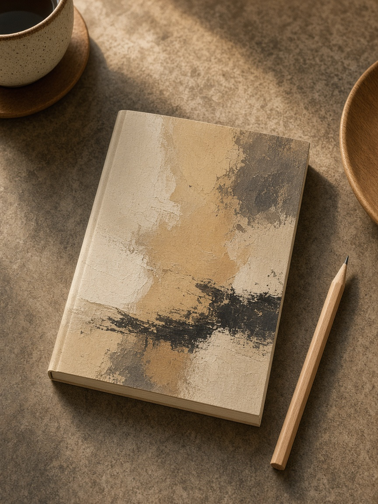
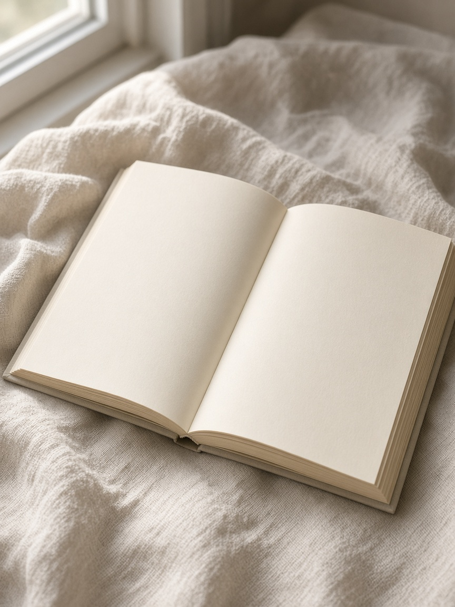
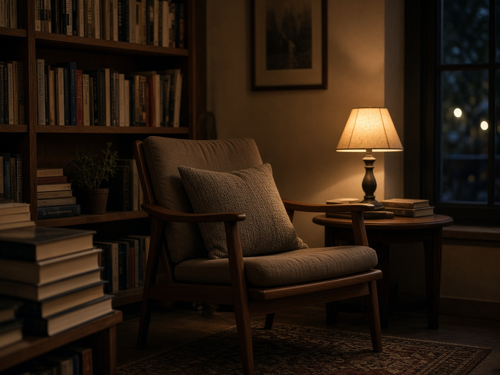

소설
밤을 건너는 집
가족이 한 문장씩 줄어드는 이야기.
신간 테이블은 작습니다. 다시 읽어도 되는 책을 먼저 올려 둡니다.
직원이 읽고 남은 문장만 짧게 적습니다.
가족이 한 문장씩 줄어드는 이야기.

출퇴근길을 다시 걷고 적은 글.

짧아서 버스에서 다 읽힙니다.

손님이 놓고 간 메모를 모았습니다.
이 분류에는 아직 올린 책이 없습니다.
서울 성수 어딘가 8, 1층. 화–일 12:00–20:00. 월요일 쉽니다.